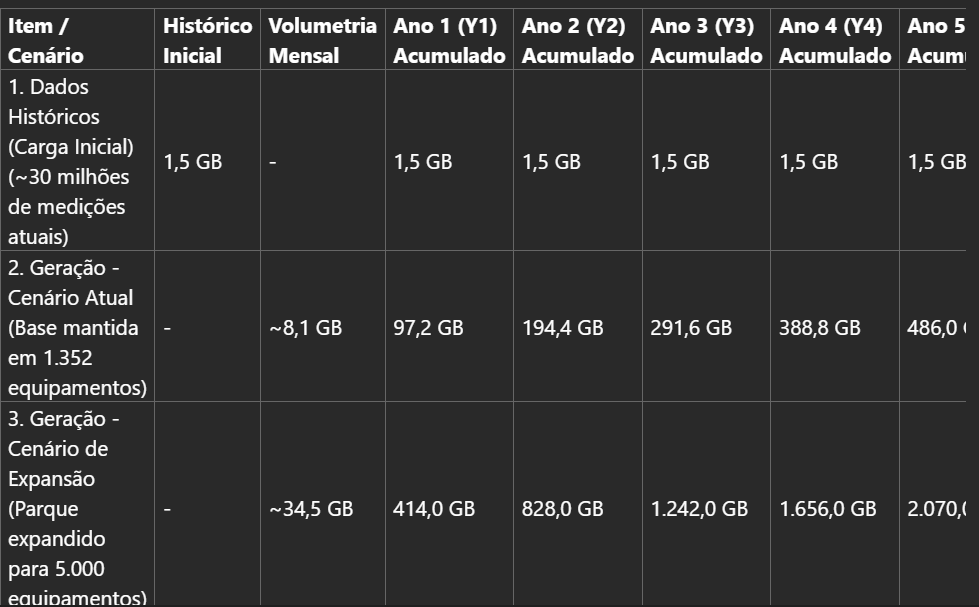

Dossiê Técnico — Dados & IA
Solução integrada de dados, APIs, analytics e IA — telemetria em nuvem. Contrato assinado 2026-06-30 · consolidação 2026-07-24.
Plataforma padrão de gestão e governança de APIs da SANEPAR · Entrega: SaaS. Oferta Forge: api-journey.
Todas as APIs da SANEPAR, independentemente do método HTTP, devem passar pelo DHuO para governança, controle de acessos, volumetria e throughput.
Ofertas Forge
| Offer | Papel |
|---|---|
api-journey | DHuO como API Manager corporativo — governança de ~150 APIs |
data-journey | Ingestão, lakehouse, histórico, streaming, catálogo |
ai-journey | 2 modelos preditivos + MLOps + dashboards analíticos |
Duas esteiras
Esteira Analítica
~21 APIs GET
Alimenta: dashboards, lakehouse, ml
Esteira de Proxies / Governança
Publicação e governança das demais APIs no DHuO
Conectividade e autenticação do endpoint
Arquitetura de referência (pre-sales / RFP)
Visão proposta em módulos GCP + DHuO: Arquitetura Proposta - GCP + DHuO (Pub/Sub · Dataflow · buckets). Diagramas da proposta técnica abaixo — fonte: forge/customers/sanepar/pre-sales/.
| Camada | Stack |
|---|---|
| apiManager | DHuO |
| bi | Looker |
| streaming | Pub/Sub, Dataflow, Confluent Cloud Kafka |
| lakehouse | GCS Bronze/Silver, BigQuery Gold |
| transform | Cloud Composer, Dataproc, dbt Core |
| governance | Dataplex |
| ml | Vertex AI |
| genai | controlada (Studio, Model Garden, RAG, Guardrails) |


Volumetria — projeção 5 anos
| Item | Histórica | Mensal | Y1 | Y2 | Y3 | Y4 | Y5 |
|---|---|---|---|---|---|---|---|
| Carga histórica (inicial) ~30 milhões de medições atuais | 1,5 GB | — | 1,5 GB | 1,5 GB | 1,5 GB | 1,5 GB | 1,5 GB |
| Geração — cenário atual Base mantida em 1.352 equipamentos | — | ~8,1 GB | 97,2 GB | 194,4 GB | 291,6 GB | 388,8 GB | 486 GB |
| Geração — cenário expansão Parque expandido para 5.000 equipamentos | — | ~34,5 GB | 414 GB | 828 GB | 1.242 GB | 1.656 GB | 2.070 GB |

| Chamadas / mês | ~45,000,000 |
|---|---|
| USNs máx / mês | 1600 |
| BI usuários / ano | 15 (Looker) |
Cronograma (CRN V0 · preliminar)
Extrato MSPDI · SANEPAR_PRELIMINAR_1050/26 · 2026-07-01 → 2027-03-24 (execução até 2027-01-26). Detalhe: cronograma-pe1050.html.
Esforço/prazos especulativos até Design Sprint (D1–D5: 2026-08-10 → 2026-08-19). Escopo no CRN: 21 APIs mandatórias + 129 proxies ≈ 150 no DHuO.
| Frente | Janela | Offer |
|---|---|---|
| Discovery e Arquitetura | 2026-08-19 → 2026-09-03 | — |
| Ingestão e Pipelines | 2026-09-04 → 2026-10-05 | data-journey |
| Integração e APIs (DHuO) | 2026-10-06 → 2026-11-13 | api-journey |
| Integração & MLOps | 2026-11-16 → 2026-12-07 | ai-journey |
| Governança e Segurança | 2026-12-08 → 2026-12-18 | data-journey |
| BI e Analytics | 2026-12-21 → 2027-01-04 | ai-journey |
| QA e Go Live | 2027-01-05 → 2027-01-26 | — |
Analytics — 5 dashboards · 2 ML
Dashboards / Looker
5 painéis · centro de controle
Vertex MLOps
2 modelos + GenAI controlada
Conectividade
VPN Site-to-Site SANEPAR ⇄ Engineering/DHuO/GCP
- Setup cloud GCP pronto do lado Engineering; VPN pelo cliente pendente (daily)
- Necessário VPC, subnet, peer e rede antes do formulário VPN
Premissas
- DHuO é a plataforma corporativa de API Management (API Journey)
- Duas esteiras: analítica (GET) e proxies (governança)
- Sem integração direta OT/SCADA de controle
- Pub/Sub proposto como desacoplamento — validar formalmente
- Deploy elástico (menor tier inicial; monitorar USNs)
Riscos
R1 — Contratos técnicos das APIs GET incompletos
Aceite de dashboards/ML depende dos contratos das ~21 APIs analíticas
R2 — Misturar aceite analítico com proxies operacionais
Pendências de proxies não devem travar dashboards/ML
R3 — Conectividade VPN
VPC/subnet/peer e fechamento VPN pelo cliente
R4 — Sizing e custos ociosos
Timing de infra vs faturamento; USNs
R5 — Licenciamento Looker / BI
Embedding, SSO, compras
R6 — Definição incompleta dos demais dashboards e ML
Clareza no 1º painel; faltam demais painéis e 2 modelos
Situação atual
- Separação esteira analítica vs proxies DHuO
- Contratos das APIs GET analíticas
- Fechamento VPN
- Definição dos 5 dashboards e 2 modelos ML
- Validação Pub/Sub / ingestão
- Licenciamento BI
Conclusão
Projeto de gestão de APIs (DHuO / API Journey), engenharia de dados (Data Journey) e analytics/IA (AI Journey) em GCP. Decisão-chave de HLD: separar esteira analítica (APIs GET → Pub/Sub → lakehouse → 5 dashboards + 2 ML) da esteira de proxies no DHuO (~150 APIs governadas).
Narrativa: dossie_tecnico_sanepar_dados_ia.md · Pre-sales: assets/pre-sales/ · Cronograma: cronograma-pe1050.html · API Journey